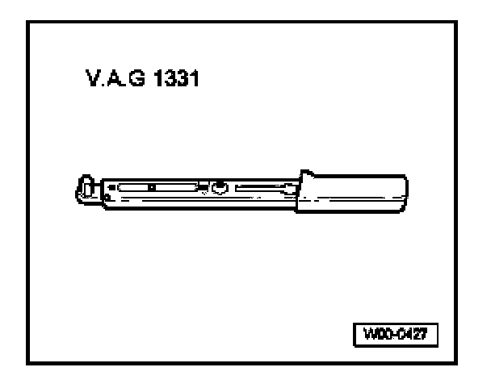
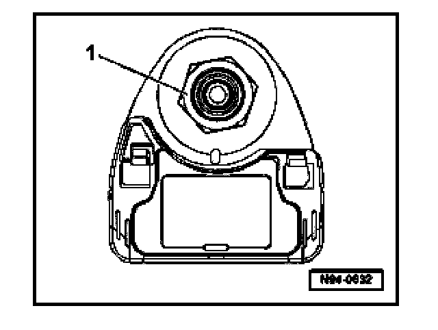
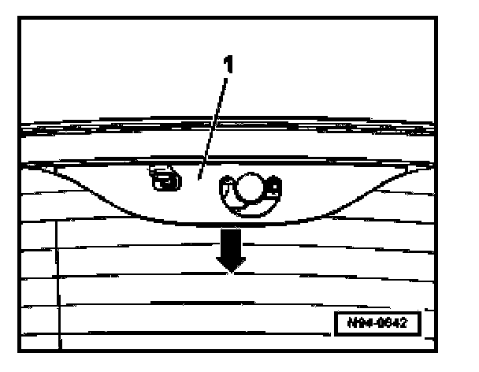
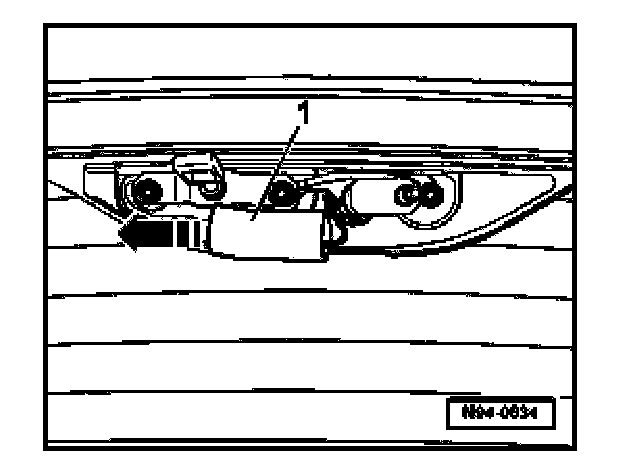
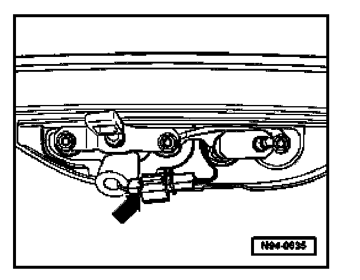
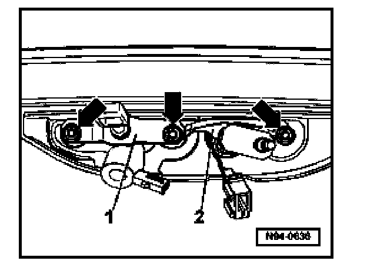
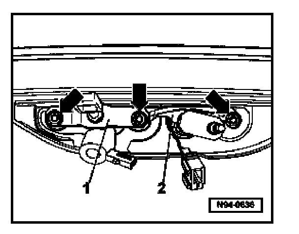
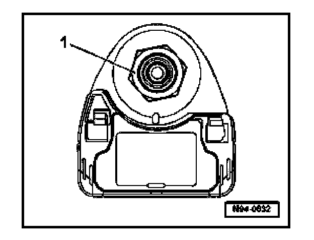

Rear Window Opening Button, Removing and Installing
Rear Window Opening Button, Removing And Installing
Special tools, testers and auxiliary items needed

- VAG 1331 Torque wrench (or 5 - 50 Nm equivalent)
Removing
- Remove rear window wiper arm.

- Remove nut -1-.
- Open rear window, emergency rear window release.

- Pull cover -1- in direction of -arrow- out from retainers.

- Push insulation -1- to side in direction of -arrow-, exposing connector.

- Separate electrical connection -arrow-.

- Remove nuts -arrows-.
- Remove locking pin -1- and wiper shaft with crank -2-.
- Remove rear window opening button.
Installing
Install in reverse order of removal, noting the following:

- Torque nuts -arrows- to 8 Nm.

- Torque nut -1- to 12 Nm.